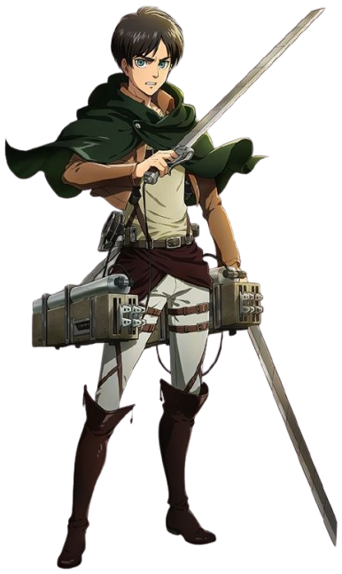

Eren Yeager is a member of the Survey Corps and the main protagonist of Attack on Titan. Motivated by a desire for freedom and a determination to eliminate the Titans, he possesses a strong will and refuses to give up in the face of adversity. His actions and ideals play a central role throughout the series.
Eren was born and raised in Shiganshina District, which is located on the southern edge of Wall Maria. He lived there until the year 845, when the Colossal and Armored Titans breached the Wall, allowing a flood of Titans to invade and destroy the city. During the incident, Eren witnessed his mother being murdered and eaten by a smiling Titan. This event aroused in Eren an intense hatred towards the Titans, and he swore to wipe all of them off the face of the earth.
| Japanese Name | エレン・イェーガー |
|---|---|
| Affiliation | Survey Corps |
| Rank | Soldier |
| Occupation | Soldier |
| Height | 183 cm |
| First Appearance | Episode 1 |